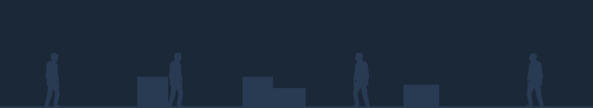

My Friend Pedro is a violent ballet about friendship, imagination, and one man’s struggle to obliterate anyone in his path at the behest of a sentient banana. The strategic use of split aiming, slow motion, and the ol’ stylish window breach create one sensational action sequence after another in an explosive battle through the violent underworld.
Throttle Gun Ballet: Unleash a torrent of destruction with an incredible level of control over both your weapons and your body. Twist and turn through the air while aiming both hands at priority threats or line up a perfect ricochet to drop an unsuspecting gangster from behind.
Mix it up: Break up the high octane running and gunning a bit with dynamic sequences like a thrilling motorcycle chase or slow it all down and take a moment to think through a series of clever (and possibly fatal) physics-based puzzles.
Slow Motion Braggaciocio: When the action amps up to a frenzy, bring it all into focus by shifting into slow motion to calm the nerves and steady the aim. Use the game's automated gif generator to easily share clips of your most over the top sequences over social media.
Mature Content Description
The developers describe the content like this:
A great deal of blood and gore and bananas.
Return Buy Here End
-
Short Description
My Friend Pedro is a violent ballet about friendship, imagination, and one man’s struggle to obliterate anyone in his path at the behest of a sentient banana.
-
Long Description